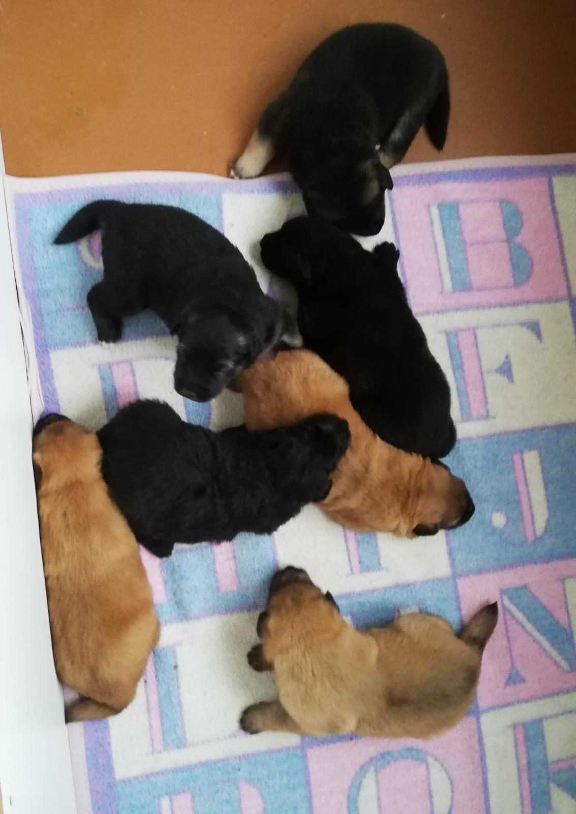
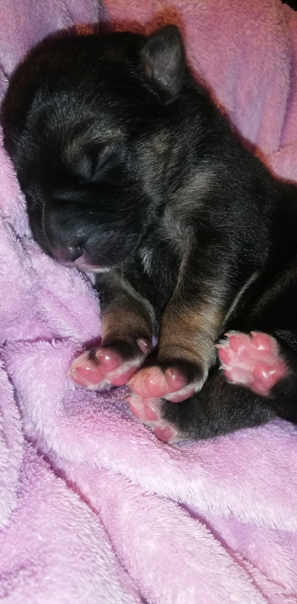

Brenda
Brendas kucēni
Brendai kopumā bija 7 mazi kucēni, gan brūnā, gan melnā krāsā ar dažādu apmatojumu, piemēram, ar garu apmatojumu vai īsu, lokainu vai taisnu.


- 4 melni kucēni;
- 3 brūni kucēni;
- no tiem 3 puisīši;
- 4 meitenītes.
Mazie kucēni piedzima 7. oktobrī. Kucēni strauji attīstījās
un tik pat ātri arī auga augumā. Jau kopš mazām dienām kucēni
bija gudri, klausīja savu mammu un nereti parādīja arī savu raksturu.